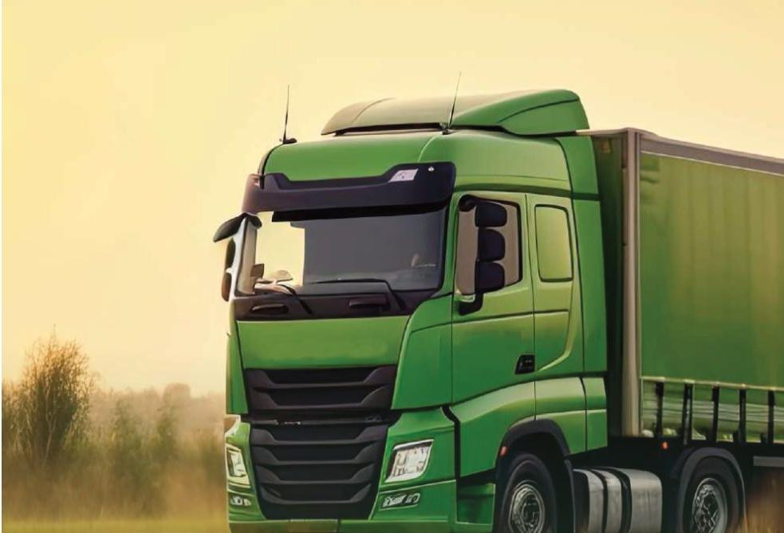
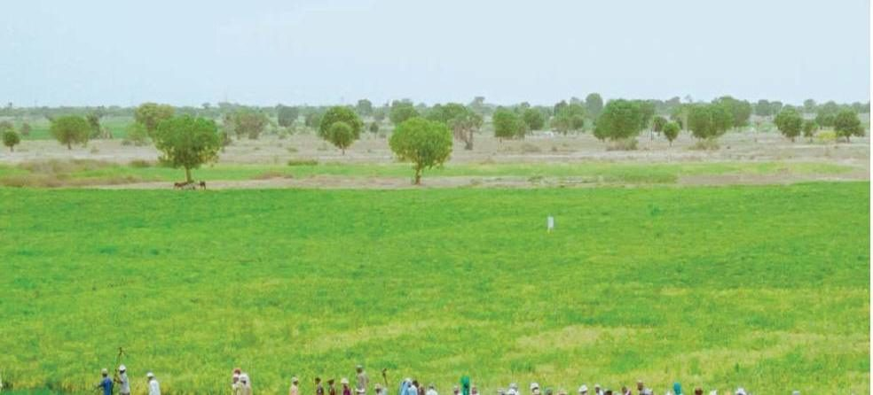
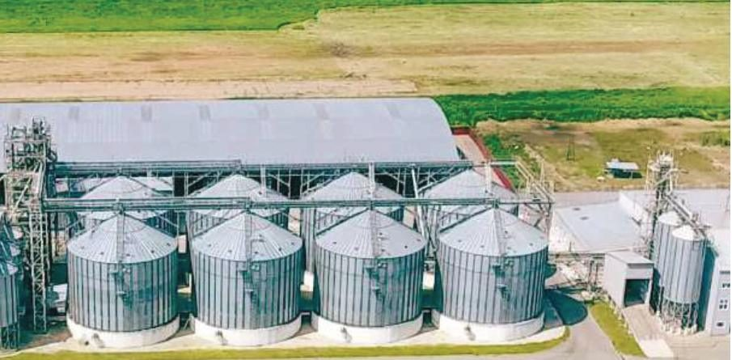

Commodity aggregationاجناس کو اکٹھا کرنا
Small supplies from individual farms gathered into larger lots that can be transported, processed, stored, and sorted.انفرادی کھیتوں کی چھوٹی سپلائی بڑے لاتھوں میں، جو نقل، پروسیسنگ، ذخیرہ اور چھانٹی ہو سکیں۔
Company profileکمپنی پروفائل
Taken from the Katek Ag company profile. These are the lines of work named there. A quote is still a message, not a payment.کیٹک اے جی کے کمپنی پروفائل سے۔ یہ وہ کام ہیں جو وہاں لکھے ہیں۔ قیمت اب بھی پیغام ہے، ادائیگی نہیں۔
Small supplies from individual farms gathered into larger lots that can be transported, processed, stored, and sorted.انفرادی کھیتوں کی چھوٹی سپلائی بڑے لاتھوں میں، جو نقل، پروسیسنگ، ذخیرہ اور چھانٹی ہو سکیں۔
Raw material turned into products with better quality, shelf life, and marketability, through processing, packaging, and distribution.خام مال ایسی مصنوع میں جو معیار، شیلف لائف اور منڈی کے لحاظ سے بہتر ہو، پروسیسنگ، پیکنگ اور تقسیم سے۔
Farmers connected to markets, supply chains managed, and agricultural products moved.کسان منڈی سے جڑیں، سپلائی چین سنبھلے، اور زرعی مصنوع چلیں۔
Adaptive agricultural practice aimed at resilience, climate risk, and food security.ایسی کھیتی جو برداشت، موسمی خطرے اور غذائی تحفظ کے لیے ڈھلے۔

Logistics is part of the operation: delivery to local and export markets.لاجسٹکس کام کا حصہ ہے: مقامی اور برآمدی منڈیوں تک ترسیل۔
A coordinated network for agricultural commodities and processed goods. An export-ready chain for international customers, with quality and timing kept in view.زرعی اجناس اور پروسیس شدہ مال کے لیے مربوط نیٹ ورک۔ بین الاقوامی گاہکوں کے لیے برآمد کے قابل زنجیر، معیار اور وقت سامنے رکھ کر۔
Advice along the agricultural value chain. The profile describes tailored work, from farm management to the value chain, for smallholders and larger agribusinesses.زرعی ویلیو چین پر مشورہ۔ پروفائل کھیت کے انتظام سے ویلیو چین تک الگ کام بتاتا ہے، چھوٹے کسانوں اور بڑے زرعی کاروبار دونوں کے لیے۔
Capacity building is named as training and advisory programmes so farmers, organisations, and communities can take up climate-smart practice.صلاحیت سازی تربیت اور مشورے کے پروگرام کے طور پر لکھی گئی ہے تاکہ کسان، تنظیمیں اور کمیونٹیاں موسم کے موافق طریقہ اپنا سکیں۔


Commercial production of crops, with machinery and skilled people, and work with research, government, and international partners.فصلوں کی تجارتی پیداوار، مشینری اور ہنر مند لوگوں کے ساتھ، اور تحقیق، حکومت اور بین الاقوامی شراکت داروں کے ساتھ کام۔
Katek Ag says it is dedicated to growth and sustainability in agriculture: innovation, partnerships, and the value chain, toward food security, livelihoods, and long-term value for stakeholders.کیٹک اے جی کہتی ہے کہ وہ زراعت میں ترقی اور پائیداری کے لیے ہے: جدت، شراکت، اور ویلیو چین، غذائی تحفظ، روزگار اور فریقین کے لیے دیرپا قدر کی طرف۔